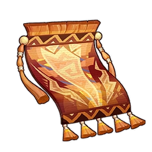

Natlan · Books & Literature
The Volcano Lord and the Shadow Pins
This Children of Echoes folktale says Traore trapped a salamander-like Volcano Lord beneath the Shadow Pins; the Shadows of the Mountains quest reveals the seal’s real purpose is to contain an Abyss incursion.

A Children of Echoes Woven Tale
The Volcano Lord and the Shadow Pins is a single-volume Natlan collection described as a woven scroll and a legend about Traore, a Children of Echoes elder. The storyteller says this is only one part of a much longer cycle, so the episode is presented as a selected tribal folktale rather than a full chronicle.
In the tale, a dark salamander-like Volcano Lord takes over the empty Great Volcano of Tollan after the great beasts depart and brings trouble to the tribes. The text does not give the Lord a confirmed historical identity.
Traore’s Trap and the Shadow Pins
The Volcano Lord plots to steal the Children of Echoes’ gemstones. A warning travels from a Flying Squirrel through a Phlogiston Aphid and Long-Necked Rhino to a Tepetlisaurus who is Traore’s companion. Traore learns of the plan and lures the giant into a narrow stone chamber full of gems.
The tribe’s Wayob transforms four borrowed sewing pins into enormous phlogiston nails. Three pin the Lord’s arm to the Sulfurous Veins; before the fourth falls, it severs the arm and escapes. The tale says the remaining arm became the shadow beneath the crystalline pillars, and the largest pin still hangs above the site.
What the Quest Reveals Beneath Them
The Version 5.0 World Quest Shadows of the Mountains returns to the same place and names Traore, but it gives the Shadow Pins a different and more concrete history: they are part of a seal against an Abyss incursion. Elder Titu explicitly contrasts that truth with the children’s story about pinning the Volcano Lord’s shadow.
The quest records Traore and Khaenri’ahn allies using Iridescent Inscription and solid phlogiston to reinforce the seal. The folktale preserves the tribe’s retelling of the event, but its monster, severed arm, and gem-trap should not be substituted for the quest’s account of what lies beneath the pins.
This is an original CoreGG reading guide, not an official HoYoverse article or a reproduction of the game text. Source links below identify the records used so you can check the original context.
Sources & references
Check these sources for the original game text and reference trail.